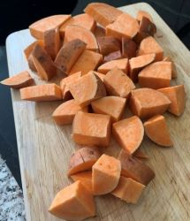
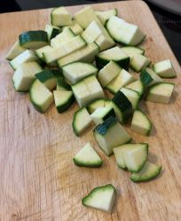
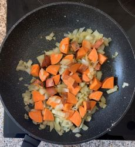
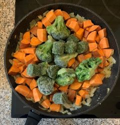
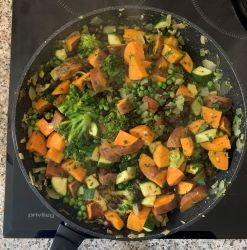
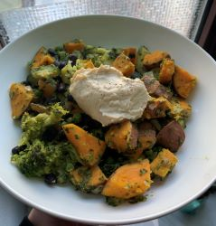
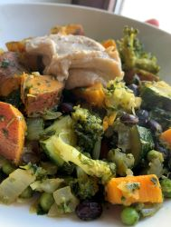
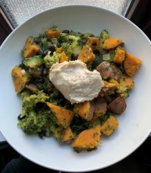

This meal is super easy to prepapre, and super tasty! Definitely a weekly favorite in my house.
Ingredients
- 1 Tbsp Olive Oil
- 1 Onion (small)
- 2 Cloves Garlic or 1 Tbsp Garlic Powder
- 2-3 sweet potatoes (medium)
- 1 Zucchini (medium)
- 1 can Black Beans (500g)
- Frozen Broccoli (240g)
- Frozen Peas (240g)
- Fresh Kale (240g)
- Parsley, Oregano, Paprika, Salt, Pepper (1 tsp each)
- Your favorite hummus (150g)


Preparation
- Finely Chop Onion
- Press Garlic
- Chop Sweet Potatos into bite-sized pieces
- Chop Zucchini into small quarter pieces
- Rinse Black Beans



Cooking Instructions
- In a large frying pan, sautee onions and garlic in olive oil, 1 min on High
- Add Frozen Broccoli to pan, cook 2 min. on Medium High
- Add sweet potatoes, cook 10 min. Keep on Medium High
- Add Zucchini and frozen peas, cook 5 min. on Medium
- Add Black Beans and spices, cook an additional 10 min. on Medium, stirring frequently
- Once sweeet potatoes have become soft, add Kale, and cook an additional 5 min on medium low.
- Serve to a bowl, add 1 Tbsp of hummus


